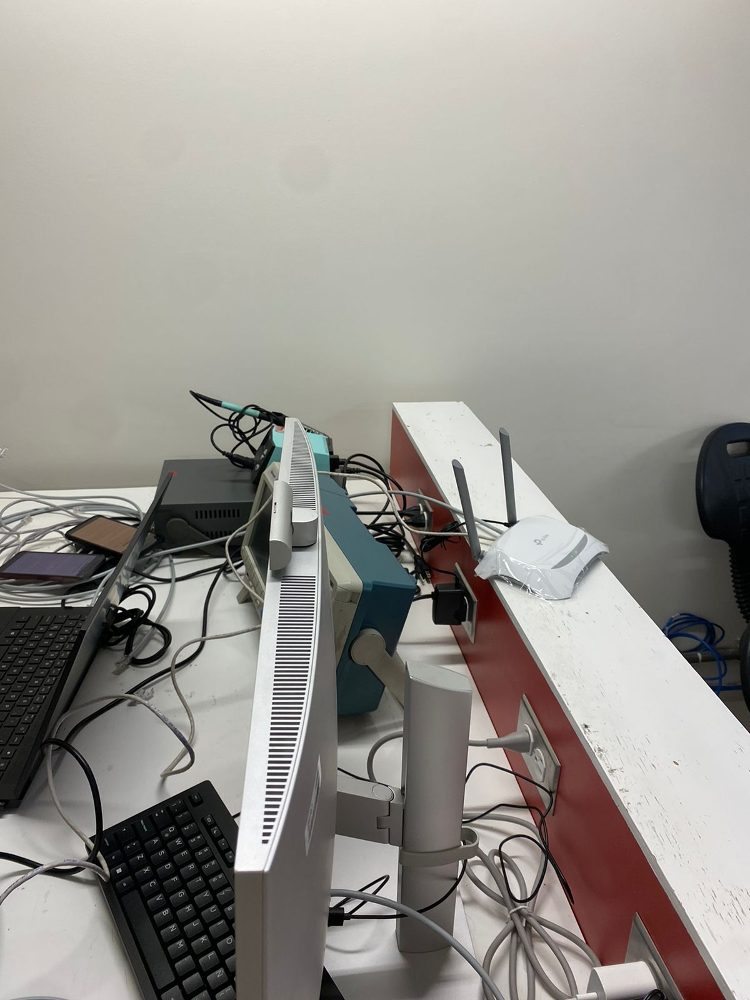
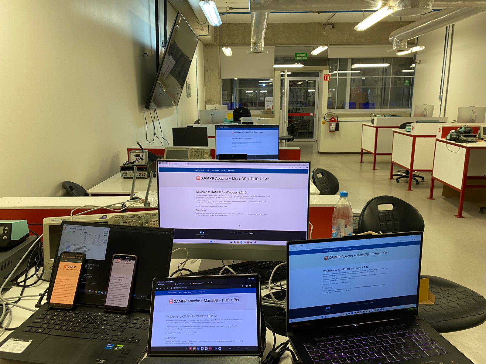

Portafolio de Actividades
Laboratorio de Redes Digitales
Departamento de Ciencias e Ingenierías | Universidad Iberoamericana Puebla, México.
Redes de computadoras con Switches y Cables
- Resumen -
En esta práctica se construyeron y verificaron tres configuraciones distintas de red local utilizando switches, routers y distintos tipos de cables de red. Se conectaron computadoras de manera alámbrica e inalámbrica, se asignaron direcciones IP automáticamente, y se comprobó la conectividad mediante comandos de red como PING. Además, se configuró un equipo como servidor para alojar una página web accesible desde los demás dispositivos. Finalmente, se realizó la unión de ambas redes, validando el intercambio de archivos y el acceso cruzado a los recursos compartidos.
- Introducción -
Una red de área local (LAN) es un conjunto de dispositivos interconectados que comparten recursos dentro de un área geográfica limitada, como una casa, oficina o laboratorio. Para establecer una red eficiente y funcional, se requieren dispositivos clave como switches y routers, además de cables adecuados según el tipo de conexión. El switch permite interconectar varios dispositivos dentro de una misma red, mientras que el router permite conectar diferentes redes entre sí y gestionar la asignación automática de direcciones IP a través de DHCP. Esta práctica está orientada a desarrollar habilidades prácticas en el diseño, armado y verificación de redes locales, reconociendo el rol de cada componente y aplicando herramientas de diagnóstico básicas como el comando PING y la verificación del acceso a servicios web locales.
- Materiales -
6 computadoras
1 switch de red
1 router inalámbrico
Cables de red directos y cruzados
Software de servidor (XAMPP u otro similar) instalado en una de las computadoras
Navegadores web y línea de comandos
- Desarrollo -
La práctica se llevó a cabo en tres fases principales, cada una enfocada en una configuración distinta de red. En la primera fase, se armó una red local utilizando un switch como dispositivo central. Se conectaron al switch cuatro computadoras utilizando cables directos. Una de estas computadoras fue configurada como servidor local, mediante la instalación de un servidor web con XAMPP. Los dispositivos se conectaron al switch y se configuraron para obtener la dirección IP automáticamente mediante DHCP, proporcionado por el router o un servidor existente en la red. Una vez establecida la red, se utilizó el comando PING desde cada computadora para verificar la conectividad con el servidor y con las demás estaciones de trabajo. Posteriormente, se accedió desde los navegadores a la dirección IP del servidor, comprobando que la página web se cargaba correctamente desde los distintos dispositivos conectados al switch. .
En la segunda fase, se construyó una red similar pero esta vez utilizando un router como dispositivo principal. El router asignó automáticamente direcciones IP a tres computadoras conectadas, ya fuera por cable (usando cables directos) o mediante conexión inalámbrica. Una de estas computadoras también fue configurada como servidor, alojando un sitio web en su servidor local. Nuevamente, se utilizó PING para comprobar la conectividad entre los dispositivos y se verificó el acceso al sitio web a través de su dirección IP local desde los otros dos dispositivos conectados.
En la tercera y última fase, se procedió a unir ambas redes, la del switch y la del router, utilizando un cable cruzado para conectar directamente el switch al router. Este paso permitió integrar todos los dispositivos en una sola red, compartiendo el mismo esquema de direcciones IP asignadas automáticamente. Se realizaron nuevas pruebas de conectividad utilizando PING entre computadoras que originalmente estaban en redes diferentes, confirmando que podían encontrarse mutuamente. Asimismo, se verificó el acceso a los sitios web alojados en ambos servidores. Finalmente, se probó el intercambio de archivos entre las computadoras mediante carpetas compartidas en red, lo cual funcionó sin inconvenientes, demostrando que la integración de las dos redes fue exitosa.

Construcción
Durante el proceso de construcción de las redes, se seleccionaron los cables adecuados para cada tipo de conexión. Los cables directos se utilizaron para conectar computadoras al switch y al router, mientras que el cable cruzado se usó para interconectar el switch con el router. Se cuidó el orden de conexión, la identificación de las direcciones IP y la configuración del servidor en los equipos seleccionados. Se utilizaron herramientas como el símbolo del sistema para ejecutar ipconfig y ping, y se accedió a los sitios montados en los servidores mediante navegador, utilizando las direcciones IP locales.
- Resultados -
ESe construyó exitosamente una red local con un switch, permitiendo la conexión de varias computadoras y acceso a un servidor local. Se armó otra red utilizando un router, con conexiones alámbricas e inalámbricas, todas con acceso exitoso al servidor y entre sí. Se verificó la correcta asignación automática de direcciones IP mediante DHCP en ambas redes. Se comprobó la conectividad con PING y el acceso a páginas web locales en todos los dispositivos. Se logró unir las dos redes mediante cable cruzado, confirmando el intercambio de archivos y acceso compartido a los servidores.

- Conclusiones -
Esta práctica fue clave para comprender la estructura y funcionamiento de una red de área local. Se identificaron claramente las funciones del switch y el router dentro de una red y se practicó la selección adecuada de cables según el tipo de conexión. La verificación de la red utilizando herramientas como PING y la navegación hacia los servidores locales permitió comprobar que la red funcionaba correctamente y que los dispositivos estaban comunicados de forma efectiva. La integración de ambas redes y la posibilidad de intercambiar archivos mostraron que una configuración bien realizada permite escalar una red y compartir recursos sin complicaciones. Este tipo de prácticas fortalece las habilidades necesarias para el diseño, implementación y mantenimiento de redes en entornos reales.
- Referencias -
Microchip AVR® microcontroller primer: programming and interfacing, third edition (synthesis lectures on digital circuits and systems), BARRETT, Steven F. Pack Daniel J., Editorial Morgan & Claypool, 2019.
K. He, X. Zhang, S. Ren and J. Sun, "Deep Residual Learning for Image Recognition," 2016 IEEE Conference on Computer Vision and Pattern Recognition (CVPR), Las Vegas, NV, USA, 2016, pp. 770-778, doi: 10.1109/CVPR.2016.90.
J. D. Hunter, "Matplotlib: A 2D Graphics Environment," in Computing in Science & Engineering, vol. 9, no. 3, pp. 90-95, May-June 2007, doi: 10.1109/MCSE.2007.55.